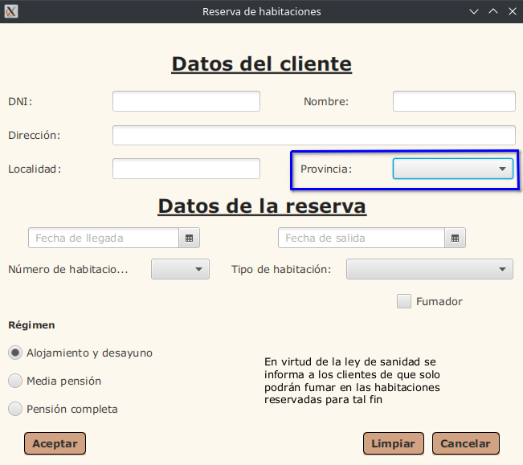
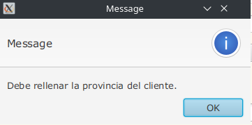

Campo Provincia

Funcionamiento del Campo Provincia:
El campo Provincia indica la provincia a la que pertenece el cliente que quiere alquilar una habitación en el hotel.
Tooltip del Campo Provincia:
Cuando se coloca el puntero del ratón sobre el Campo Provincia, aparece un mansaje que pone “Elije Provincia”.
El Campo Provincia no admite:
- Dejar la provincia vacía (el valor por defecto)
Mensajes de Error del Campo Provincia:
Si está el valor por defecto:
